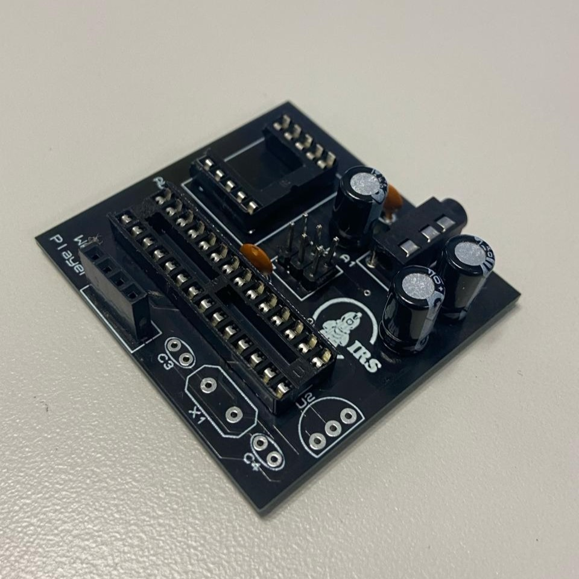
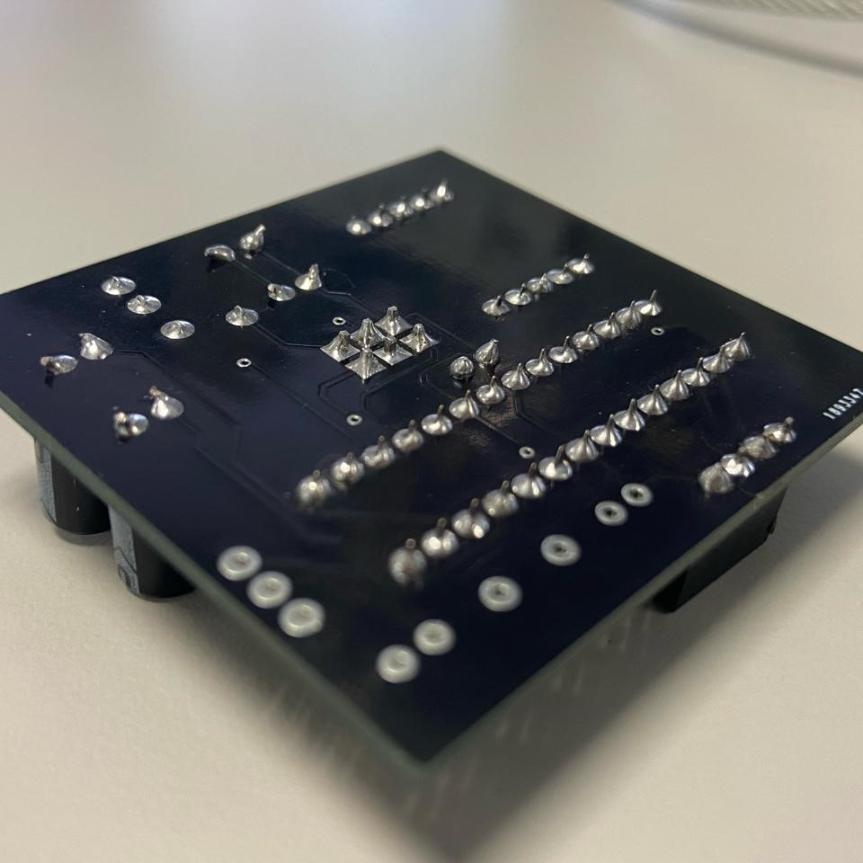

Evidence



This project aims to enable seamless playback of WAV audio files directly from a micro-SD card, offering a versatile and cost-effective solution for various audio applications. It was a very good starting point to understand the functioning of transforming digital audio files into analog voltage representation to feed a speaker via PWM and a low pass filter.
It was a very interesting project to work on, and it was a great opportunity to learn about the inner workings of digital audio processing and the challenges of working with limited resources. The project was developed using an Atmega328p microcontroller, and the code was written in C++ using direct register manipulation.